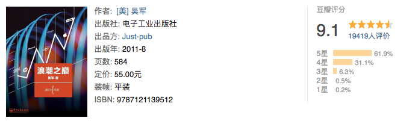
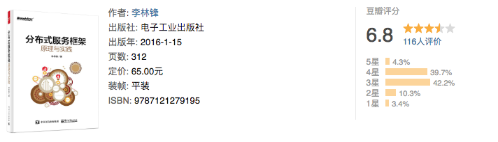

五月、阅读、思考、实践、反思
子曰：“学而时习之，不亦说乎？有朋自远方来，不亦乐乎？人不知而不愠，不亦君子乎？”
最近阅读了几本书，渐渐地培养了自己持续阅读的兴趣。看到公众号老金每月都在一个书单列表。我也整理定期整理下我的书单。
三体
点评：除了早期沉迷的网络小说，三体是我今年来最投入的一本书。不光光是科幻，书中对人性的思考更让人深思。
学会提问

点评：学会思考，掌握思考的艺术。读完之后，生活中需要思考的地方不在小白。书中内容较多，需多深度阅读，深度思考，反复实践，才能融会贯通。
重构

点评：一本程序员需要反复阅读的书，之前阅读过其中部分内容，这一次下定决心全部读完。受益匪浅，需要改进的地方还有很多。
穷爸爸富爸爸
点评：给自己多一条出路，能够从容的面对程序员的中年危机。印象最深刻的是：工作不为钱，而为学习某项技能，学习最终产生价值。
Head First 设计模式

点评：一直没有系统的阅读过设计模式的书，这本书寓学于乐，读起来一点不枯燥。其可能的缺点在于不够聚焦，有点啰嗦，进而看了后面忘了前面。
浪潮之巅

点评：讲述高新科技成败历史的书籍，从本书能够看出一家百年企业应该必须的元素，以及优秀的领导人的重要性。基因决定命运。
分布式服务框架原理与实践

点评：之前一直做基础开发，对于架构方面了解很少，这本书算是我架构的启蒙书籍。虽然目前的开发中还没有应用到相关知识，相信后续一定有所帮助。
这样读书就够了
点评：拆书帮的经典之作，对于致用类图书的阅读有很大的启发作用。不过这种读书方法最好还是现场读书。对于一个人读书，这本书也告诉我们一个道理：学到就是赚到，不必强求掌握所有。
把时间当作朋友

点评：李笑来的力作，对我影响很大的一本书，这本书是真正的提升了我个人的内驱力。似乎是忽然，我从曾经的懒散，变得自律。
高效能人士的七个习惯

点评：一本常读常新的书，以前对成功学嗤之以鼻，从这本书后对其有了改观。这本书也反映了我阅读方面的一个问题——读了就忘。因此，我自己开始从宏观的角度来记录所读所思。
禅与摩托车维修艺
点评：因为对摩托车感兴趣而看这本书，尚未看完，也不确定以后会不会看完。当作者开始反复的想出去阐述良质这个概念的时候，我开始对其丧失了兴趣。有可能现在的觉悟不够。
本文作者：ZeroJiu
本文链接： https://www.freehacker.cn/reading/read-and-more/
版权声明：本博客所有文章除特别声明外，均采用 CC BY-NC-SA 3.0 CN 许可协议。转载请注明出处！
温馨提示：开启科学上网访问本站，能获得更好的阅读体验，并启用Disqus评论功能和作者交流。